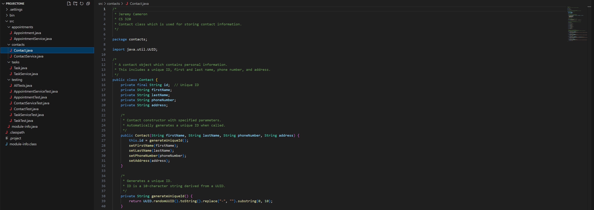
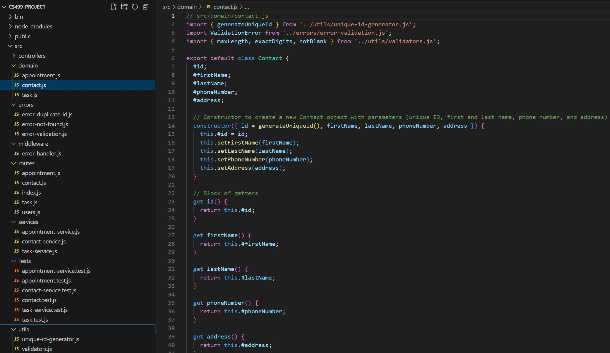
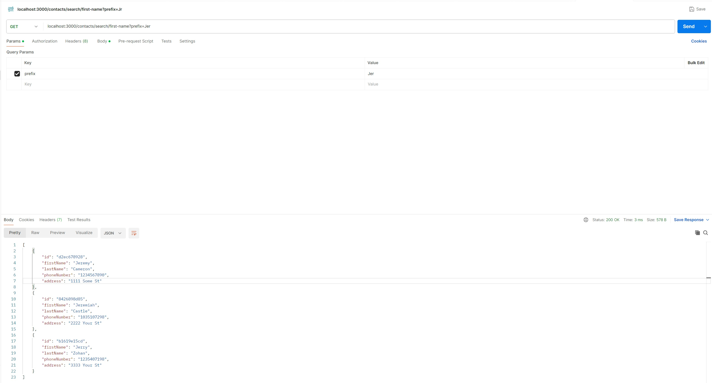
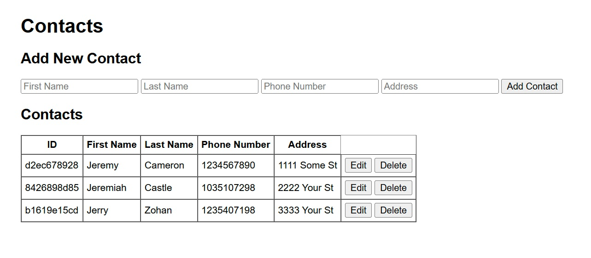

I am a software developer with a strong foundation in full-stack development, software engineering principles, and data structures. Throughout my coursework in the Computer Science program at SNHU, I have consistently focused on creating modular, maintainable, and efficient software while building practical skills that directly translate into professional readiness. Developing this ePortfolio has allowed me to showcase my technical strengths, reflect on my growth, and demonstrate my ability to apply computer science knowledge in real-world contexts.
My academic experience extended beyond writing code. I gained skills in producing technical documentation, creating UML diagrams, and assessing vulnerabilities in software systems. These activities required me to analyze problems from multiple perspectives and present solutions clearly, whether through structured design artifacts or written reports. I also developed experience tailoring technical communication to different audiences, ensuring clarity for both technical peers and non-technical stakeholders. These experiences shaped my professional values of precision, adaptability, and continuous learning.
From a technical perspective, I advanced my understanding of algorithms and data structures, learning to evaluate trade-offs and apply efficient solutions. For example, by integrating Tries alongside Maps, I demonstrated the ability to combine structures strategically for performance and clarity. I applied principles such as modular design, encapsulation, and validation to create scalable and secure systems. My work with databases gave me practical experience in data modeling and management, and I enhanced these skills by integrating MongoDB into my capstone project to provide persistent, reliable storage. Security was another recurring focus, where I applied input validation, error handling, and careful data management practices to protect data integrity and support reliable system behavior.
The artifacts in this portfolio demonstrate how these skills come together. In the software design and engineering enhancement, I transitioned a Java application into a Node.js/Express application, applying modular architecture and best practices. In the algorithms and data structures enhancement, I implemented a Trie to improve search efficiency while balancing trade-offs with other structures. Finally, in the databases enhancement, I integrated MongoDB and developed a frontend to connect users with backend services and stored data. Together, these artifacts represent a complete view of my abilities: from designing maintainable systems, to applying algorithms effectively, to building full-stack applications with persistent data and security considerations.
Overall, this ePortfolio reflects my technical growth, my ability to evaluate and implement effective solutions, and my commitment to producing high-quality software. It provides clear evidence of my capacity to learn new technologies, apply software engineering principles effectively, and adapt to complex development challenges.
↑ Back to TopCode reviews are a critical part of the software development process, as they ensure code is functional, secure, and aligned with best practices. By evaluating aspects such as functionality, validation, and error handling, code reviews not only identify bugs and weaknesses early, saving time and reducing costs, but also reinforce coding standards and highlight strengths in implementation. Additionally, when incorporated as peer reviews, they encourage collaboration and knowledge sharing among team members, which ultimately leads to more reliable, maintainable, and professional-quality software.
↑ Back to TopThe original artifact is a Java-based application developed during my CS320 course in August 2024, designed to manage contacts, tasks, and appointments. It implements full CRUD functionality and includes a comprehensive JUnit testing suite. The project follows a modular architecture with domain-driven principles, providing a well-structured foundation for validation, data management, and maintainable code. This original version demonstrates my ability to design and implement functional software, apply object-oriented programming concepts, and create a maintainable, testable codebase.
 ↑ Back to TopI chose this artifact for my ePortfolio because it aligns well with all three steps of my enhancement plan and demonstrates a broad range of my skills as a software developer. Through the enhancements, I have successfully converted the entire project from Java to Node.js with an Express backend. This conversion highlights my adaptability in working with different programming languages and frameworks, as well as my ability to port existing functionality into a more modern and modular architecture. Additionally, I improved the artifact by refactoring it into a more modular design, applying encapsulation principles, and enhancing validation mechanisms to improve security and maintainability.
I believe I met the course outcomes I planned to achieve with this enhancement. The process of rebuilding and extending the artifact has strengthened my understanding of software engineering principles and best practices. While I am satisfied with the testing I have completed, I recognize that there is still room for improvement in creating more comprehensive test coverage, which could help uncover additional edge cases or vulnerabilities. If time permits, I plan to enhance the testing suite further.
The process of enhancing and modifying this artifact taught me that even seemingly simple tasks can become complex and time-consuming. I initially expected the conversion to Node.js to be straightforward, but it required a deeper understanding of both the original logic and the new framework to ensure accuracy and maintainability. I also learned the value of creating modular, reusable code by separating helper functions into utilities that could be shared across multiple files. The greatest challenge I encountered was time management, as the enhancements required far more time and effort than I anticipated. Nonetheless, the experience improved both my technical proficiency and my problem-solving approach when transitioning projects between languages and platforms.
 ↑ Back to TopI chose this artifact because it reflects my growth in both software engineering and algorithmic thinking. Specifically, the second enhancement introduced a Trie data structure to support efficient prefix-based searching for first names, last names, and task names. Initially, I considered replacing the Map entirely with a Trie, but through deeper research and experimentation, I realized that combining both structures would yield better performance and flexibility. The Map remains optimal for exact ID and field lookups, while the Trie excels at scalable prefix search. This decision shows my ability to evaluate trade-offs and apply data structures in a way that solves real-world problems effectively.
This enhancement directly supports my targeted course outcomes related to applying algorithms and data structures to software problems. In fact, I exceeded my original goals by not just implementing a Trie but thoughtfully integrating it in a way that improved both efficiency and design clarity.
The process of enhancing this artifact taught me a great deal about balancing theoretical knowledge with practical constraints. I deepened my understanding of how Tries work internally, how they manage memory, and how they interact with other structures like Maps. One of the biggest challenges was deciding whether to replace or augment the Map. Through testing and reflection, I concluded that using both was the most effective solution. I also reinforced my commitment to encapsulation and modular design by keeping the Trie implementation separate and integrating validation through a centralized utility class.
 ↑ Back to TopI chose this artifact because it demonstrates my growth in software engineering, data management, and full-stack development. For the third and final enhancement, I integrated MongoDB to provide persistent, scalable storage for managing contacts, tasks, and appointments. I also developed a functional frontend using Handlebars to connect seamlessly to the backend and database. These changes demonstrate my ability to adapt an existing application to include new technologies, implement database integration, and design a user interface that enables real-world interaction with the system.
I successfully met the course outcomes I had planned for this enhancement. The application now fully integrates MongoDB for data persistence, includes a functional UI, and ensures data integrity and security through the original validation mechanisms I maintained.
This process was a valuable learning experience. While I had used MongoDB a few times before, this was my first time incorporating it into an existing, fully functional application from the ground up. I gained confidence in designing and implementing database-backed systems and strengthened my skills in connecting backend services to a frontend interface. The biggest challenge I faced was time management. I underestimated the effort required to build the frontend, particularly in ensuring smooth interaction between the UI and backend. This experience has sharpened my ability to estimate project timelines more accurately in the future.
 ↑ Back to Top